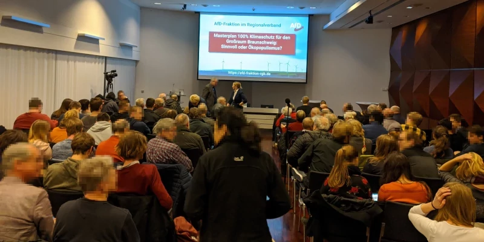
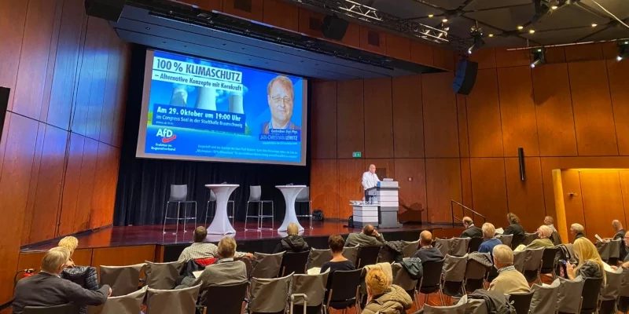

Einigkeit und Recht und Freiheit

Direktkandidat im Wahlkreis 2 für die Landtagswahl in Niedersachsen
Zu mir:
- Seit 2016 Fraktionsvorsitzender der AfD-Fraktion im Regionalverband
- Beruf: Systemanalytiker in der Automobilindustrie
- Studium: Mathematik und Physik für das Lehramt an Gymnasien
- Verheiratet, 3 Kinder
Meine drei wichtigsten politischen Themen sind:
- Die Familien stärken und steuerlich entlasten.
- Weitere Migration in unser Sozialsystem zu verhindern, Rückführung fördern und Abschiebung konsequent durchsetzen.
- Den Islamismus mit den Mitteln des Rechtsstaats konsequent bekämpfen.
Veranstaltungen
Organisierte Bürgerveranstaltungen

Podiumsdiskussion zum Klimawandel
Die AfD hat mit ihrer Klima-Debatte einen Nerv getroffen, hieß es in der Samstagsausgabe der Braunschweiger Zeitung. ...
Weiterlesen

Alternative Konzepte mit Kernkraft - Dual-Fluid-Reaktor
Welche Entwicklungen gibt es im Bereich der Kernenergie, diese Frage hat durch die Abhängigkeit von Energie aus Russland noch einmal eine höhere Bedeutung bekommen.
Weiterlesen